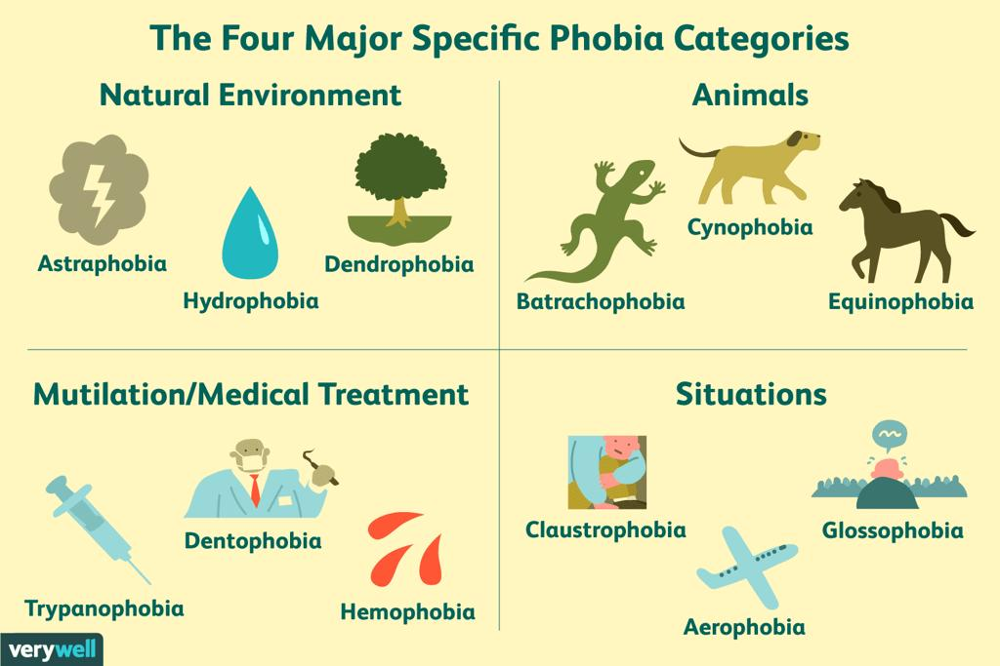

Anxiety Disorders
Feeling anxious is a common emotion. Some anxiety is normal when faced with stressful events. However, when anxiety becomes persistent, overwhelming, and irrational, it may interfere with daily activities like performance at work and in relationships. When anxiety becomes excessive, one may develop an anxiety disorder.
Anxiety disorders are mental conditions that involve excessive worrying or stress about specific situations or aspects of a person's life
There are different types of anxiety disorders, including:
General symptoms of anxiety disorder include:
Women are 60% more likely to get anxiety disorder than men
Even though anxiety disorders are twice as likely to occur in women, this does not mean men do not experience these disorders as well. It does not make a man less “manly” or “childish” for experiencing mental illnesses.
OCD ( Obsessive-compulsive disorder )
- It causes you to obsessively repeat constant sensations or thoughts or the urge to do something over and over again
- Compulsions // obsessions like thoughts, urges or mental images, cause anxiety. However, not all habits are obsessions.
- A person with OCD generally cannot control their thoughts // behaviours that are recognised to be excessive
- Some individuals with ocd also have a tic disorder ( sudden , brief, repetitive movements )
OCD can even be characterised as an extreme form of perfectionism, where anything that seems "imperfect" can lead to anxiety, fear, and distress.
Perfectionism is a personality trait where one strives for flawlessness; it becomes OCD when those strives cause disorder in one's life.
causes
- OCD occurs due to genetic and hereditary factors.
- Chemical, structural and functional abnormalities in the brain are the cause.
- Distorted beliefs reinforce and maintain symptoms associated with OCD.
How it affects their life
- People may spend the day carrying out compulsions which can cause them to be unable to leave the house
- Some other people with OCD may also carry out their compulsions in secret or avoid social situations so they can carry out their compulsions without trouble
credits to NIH ( national institute of mental health ), OCDuk
Panic Disorder
Many people have just one or two panic attacks in their lifetimes, and the problem goes away, perhaps when a stressful situation ends. But if you've had recurrent, unexpected panic attacks and spent long periods in constant fear of another attack, you may have a condition called panic disorder.
Although panic attacks themselves aren't life-threatening, they can be frightening and can significantly affect your quality of life. Even though the symptoms of this disorder can be quite overwhelming , they can be managed and improved with treatment. Seeking treatment is the most important part of reducing symptoms and improving your quality of life.
PANIC ATTACKS AND PANIC DISORDER ARE TWO VERY DIFFERENT THINGS.
Causes
The causes of panic disorder are not clearly understood. Research has shown that panic disorder may be genetically linked. Panic disorder is also associated with significant transitions that occur in life.
Symptoms
 image credits !
image credits !
Panic disorders often happen without warning and result in physical symptoms like chest pain, shortness of breath, sweating, shaking, and dizziness. They also may involve feeling dissociated from reality or having a sense of impending doom.
Normally, an attack lasts less than 20 minutes.
how it affects their life
Panic disorder can interfere a lot with daily life, causing people to miss work, go for many doctor visits, and avoid situations where they fear they might experience a panic attack.
Panic attacks can be similarly associated with other mental health conditions, including eating disorders, personality disorders, and substance-related conditions
Panic attacks can occur while you're asleep
click here to learn more :D
credits to heathline
Phobia
Specific phobias are the overwhelming and unreasonable fears of objects // situations that pose little real danger but provoke anxiety and avoidance. Specific phobias are long-lasting and cause intense physical and psychological reactions which can affect one’s daily life in terms of their ability to function normally.
Categories of specific phobias ( fear of~ )
 creditsCauses
- Negative experience, trauma
- Genetics and environment — this could be due to genetics or learned behavior.
- Brain function — changes may play a role in developing phobias
How it affects their life
- Social isolation
- At risk of academic and relationship problems.
- Trouble with social skills
- Mood disorders like depression and other anxiety disorders
- Substance abuse ( addiction to drugs, alcohol )
- Suicide
The most common phobia is social phobia
if some people avoid you, just know they MIGHT have caligynephobia, the fear of this ( dont worry it's all wholesome )
there is a difference between phobia and fear... click here to learn more
a phobia won't be diagnosed unless it impacts your life
credits to healthline
Social Anxiety

Social anxiety disorder is a type of anxiety disorder that causes extreme fear in social settings. People with this disorder have trouble talking to people, meeting new people, and attending social gatherings. They fear being judged or scrutinized by others. They may understand that their fears are irrational or unreasonable, but feel powerless when they try to overcome them.
Some people with the disorder do not have anxiety in social situations but have performance anxiety instead.
Causes
The exact cause of the social phobia is unknown. However, current research supports the idea that it is caused by a combination of environmental factors and genetics. Negative experiences may also contribute to the disorder, which includes:
- bullying
- family conflict
- sexual abuse
If you have a family member with social phobia, you’re more at risk of having it, too.
Symptoms of Social Anxiety
When having to perform in front of or be around others, people with social anxiety disorder tend to:
image credits !Psychological symptoms may include:
- worrying intensely about social situations
- worrying for days or weeks before an event
- avoiding social situations or trying to blend into the background if you must attend
- worrying about embarrassing yourself in a social situation
- worrying that other people will notice you are stressed or nervous
- missing school or work because of anxiety
how it affects their life
Social anxiety disorder prevents you from living your life. You'll avoid situations that most people consider “normal.” You might even have a hard time understanding how others can handle them so easily. When you avoid all or most social situations, it affects your personal relationships
Social Phobia is not shyness.
credits to healthline, mayo clinic, NIH ( national Institute of mentalhealth ) :)
Generalised Anxiety Disorder ( GAD )
GAD is different from normal feelings of anxiousness. It’s common to feel anxious about the things happening in your life — such as your upcoming exams— every once in a while. A person who has GAD may worry uncontrollably about their studies several times per day for months on end. This can happen even when there isn’t a reason to worry. The person is often aware that there is no reason for them to worry.
Sometimes people with this condition just worry, but they are unable to say what they are worried about. They report feelings that something bad may happen or report that they can’t calm themselves.
This excessive, unrealistic worry can be frightening and can interfere with relationships and daily activities.Generalized Anxiety Disorder (GAD) is characterized by persistent and excessive worry about a number of different things. People with GAD may anticipate disaster and may be overly concerned about money, health, family, work, or other issues.
Causes and risk factors
- a family history of anxiety
- recent or prolonged exposure to stressful situations, including personal or family illnesses
- excessive use of caffeine or tobacco, which can make existing anxiety worse
- childhood abuse
Symptoms
 image credit !
image credit !
how it affects their life
Anxiety can disrupt a person's life by impacting their relationships with others, self-confidence and ability to complete daily tasks at work or school.
credits to healthline